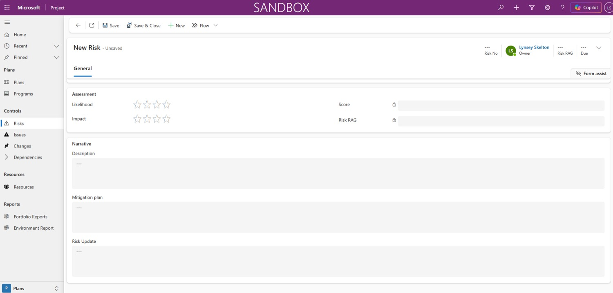
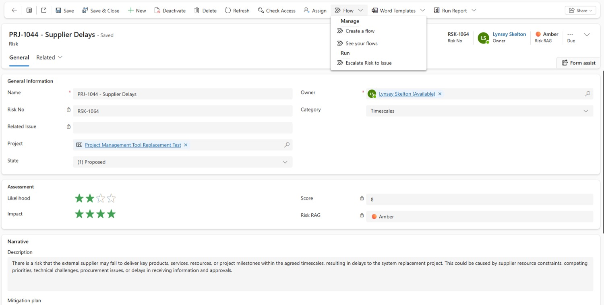
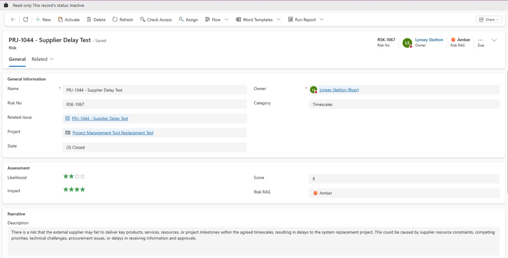
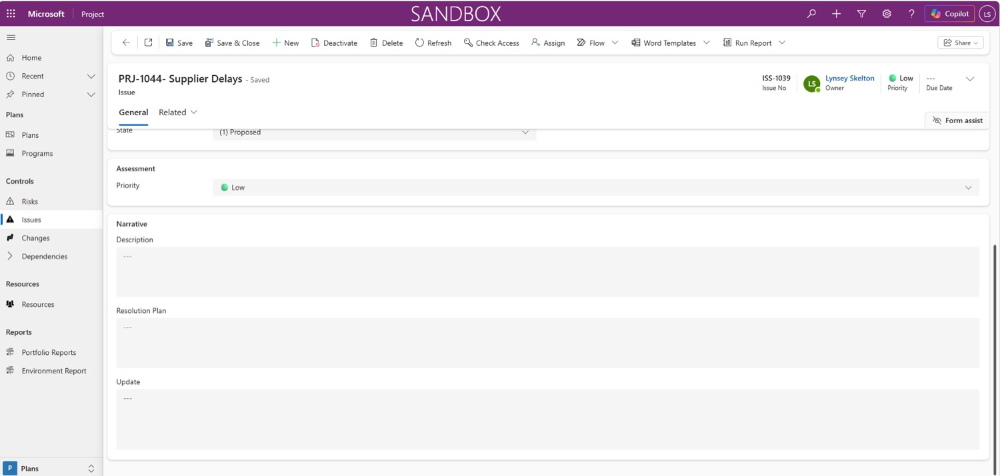

Run the project
Risks & issues
Every project risk and issue is recorded and kept up to date in Project Hub. Risks are scored on a 4×4 matrix; issues are prioritised; and when a risk actually happens, one flow turns it into an issue for you.
Risk or issue?
Both live on their own tab in your plan, and work in a similar way. The difference is whether it might happen or has happened.
Risk — it might happen
- Scored on a 4×4 matrix: Likelihood × Impact
- Project Hub works out the Score and Risk RAG
- Has a Mitigation plan
- Kept current with the Risk Update field
Issue — it has happened
- Prioritised High, Moderate or Low
- Only High issues are discussed at programme boards
- Has a Resolution Plan
- Kept current with the Update field
When a risk turns into reality, escalate it to an issue rather than starting again.
The naming convention
Project Hub keeps every project's risks and issues in one shared SharePoint list, so two can't have the same name — the system won't allow it. Start every title with your Project ID to keep it unique.
Same rule for bothUse Project ID – Risk Title for risks and Project ID – Issue Title for issues. Before you start, note your Project ID from the top of the page.
Create a risk
Select the Risks tab to see a table of the project's risks, then + New Risk. The form has three parts.
- Name — your Project ID, then the risk's title. Naming
- State — pick from the dropdown. Never choose Proposed.
- Owner — search for a name. They need Read permission on your project first. Permissions
- Category — pick from the dropdown.
- Likelihood and Impact — click the stars (1 to 4 each). The matrix
- Description and Mitigation plan — describe the risk and what you'll do about it.
- Risk Update — add news here as the risk develops.
- Select Save & Close. This is what pulls through the Score and Risk RAG.
See the real screen — a new risk form

The 4×4 risk matrix
Every risk is assessed on two questions, each rated from one to four stars. Together they place the risk on the matrix — the further up and right, the more serious.
Shading is illustrative. Project Hub calculates the actual Score and Risk RAG when you Save & Close.
Escalate a risk to an issue
New in Project Hub. When a risk happens, a Flow turns it into an issue and carries its details across, so you don't retype anything.
The clicks, in order — from the open risk
What happens to each record
- Banner at the top read-only — can't be edited
- State Closed
- Related Issue link to the new issue
- Risks tab no longer listed
- Name copied — edit if needed
- Description copied — reword it as an issue
- State Active
- Owner copied — change if needed
- Due Date leave blank
- Priority you set it
Finish off the new issue
- On the old risk, select the Related Issue link to open the new issue.
- Check the Name, and reword the Description so it reads as something that has happened.
- Change the Owner if needed. Don't fill in Due Date.
- Set the Priority — High, Moderate or Low.
- Add your Resolution Plan, and any news in Update with the date in the text.
- Select Save & Close. You'll go back to the inactive risk — select the back arrow to return to your plan.
- Open the Issues tab: your new issue is in the table.
See the real screen — the Escalate Risk to Issue option

See the real screen — the risk after escalation

Create an issue
For issues that weren't a risk first. Select the Issues tab, note your Project ID, then + New Issue.
| Field | What to do |
|---|---|
| Name | Your Project ID, then the issue title. Naming |
| State | Pick from the dropdown. Never Proposed. |
| Owner | Search for a name. They need Read permission on your project. Permissions |
| Due Date Don't fill | Leave it blank. |
| Priority | High, Moderate or Low. Only High issues go to programme boards. |
| Description | What has happened. |
| Resolution Plan | How you'll resolve it. |
| Update | Your latest position, whenever things change. Put the date in the text. |
Then select Save & Close. Your issue appears in the table on the Issues tab.
Where each priority goes
See the real screen — a new issue form
